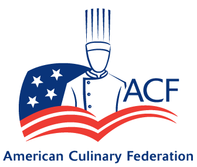
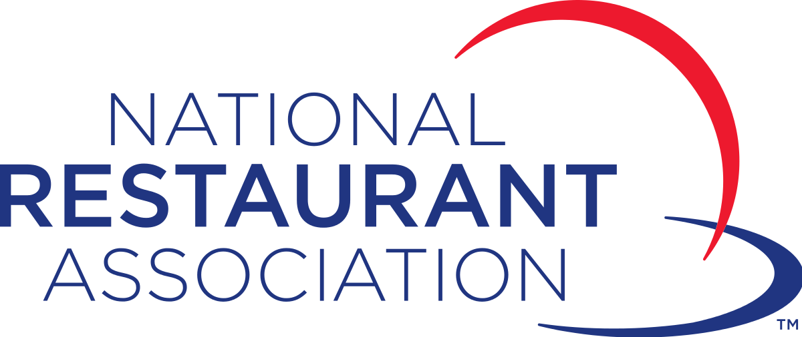

We help grow your food business. Everything from providing a consistent brand experience, raising staff competency, improving training quality and effectiveness, to helping promote career growth from within. Through certified online training and business eCoaching, we help you decrease labor and training costs, improve guest satisfaction and increase your sales.
Length of Program: 16 Weeks
The Restaurant Management Certificate Program would prepare students with
specialized training for hospitality and restaurant management.
The program focuses on providing students with theoretical and practical management
approaches to restaurant management, food sanitation and safety, controlling food costs,
hospitality accounting and human resources/supervision
Cerifications:
National Restaurant Association
- Hospitality & Restaurant Management
- Human Resources
- Accounting
- Food Costs
- Serve Safe
Licenses: City of Chicago Food Service Sanitation Manager
Length of Program: 16 Weeks
The Manufacturing Skill Standards Council (MSSC)
industry recognized credentialing system leading to a Certified Production
Technician covers the four critical production functions (safety,
quality practices & measurement, manufacturing process,
maintenance awareness) common to all sectors of manufacturing.
This program provides the foundational knowledge and skill sets a
pplicable for entry to mid-level production technician jobs in the
manufacturing industry with a specialization in food. It is designed for
individuals wanting to enter the manufacturing and food manufacturing fields
as production line workers as well as experienced employees wishing to seek
MSSC certification.
Cerifications:
HACCP
Serve Safe - Food Safety
Manufacturing Skills Standards Council
- Certified Production Technician
Length of Program: 1 day
The course covers critical principles including: personal hygiene, cross contamination,
time and temperature, cleaning and sanitizing, and more. A practice exam is included
at the end of the course to help prepare for the proctored ServSafe Manager
Certification exam.
Length of Program: 2 days
CHEF Coaching is an innovative program designed to train clinicians
to provide easy to follow culinary instruction and education directly to
patients in order to improve the quality--and often reduce the cost--of
food preparation in the home.
Upon the completion of the program you should expect to improve your
culinary skills and to translate this new knowledge into your practice
and improve the nutrition of your clients.
Cerifications:
Institute of Lifestyle Medicine, Spaulding Rehabilitation Hospital,
Harvard Medical School
- Certificate of Completion in Culinary Coaching
Length of Program: 16 weeks
A program that prepares individuals to provide professional chef and
related cooking services in restaurants and other commercial food
establishments. Includes instruction in recipe and menu planning,
preparing and cooking of foods, supervising and training kitchen assistants,
the management of food supplies and kitchen resources, aesthetics of food
presentation, and familiarity or mastery of a wide variety of cuisines and
culinary techniques.
Cerifications:
National Restaurant Association
- Cooking
American Culinary Federation
- Certified Fundamentals Cook – CFC
ServSafe
- Certification Food Service Manager
- Certification Food Allergens
Length of Program: 6 weeks
Training program is designed to take the participant from understanding
the various relational aspects of food business model such as partnerships,
customer relationships, financials and budgeting for a profit, and culinary
basics to building their business through via real-world challenges to steps
in pitching their business to investors and new partnerships to eventually
step out on their own as standalone and/or brick and mortar business owners
Copy for donation section goes here. Copy for donation section goes here. Copy for donation section goes here.
Foodhero is a social enterprise ed tech culinary startup that provides customized and innovative training courses in business agility training for food entrepreneurs and certified culinary courses for professionals.

We believe in
Workforce Education
Good Food
Healthy Menus
Sustainable Restaurants
Business & Community Empowerment
Social & Environmental Responsibility